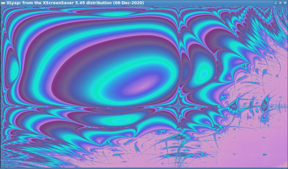

Стандартные скринсейверы, поставляемые с оконной системой X11 в ОС Linux, представляют собой обычные программы, которые запускаются спустя определенное время бездействия пользователя за компьютером.
Обычно их расположение следующее:
/usr/libexec/xscreensaver/*
или
/usr/lib/xscreensaver/*
Например, чтобы запустить фрактал Ляпунова, в Debian Linux можно использовать команду:
/usr/libexec/xscreensaver/xlyap
В результате чего этот скринсейвер запустится в отдельном окне.

У скринсейвера можно узнать его параметры через опцию --help:
/usr/libexec/xscreensaver/xlyap --help
XLyap: from the XScreenSaver 5.45 distribution (08-Dec-2020)
https://www.jwz.org/xscreensaver/
Options include: -root, -window, -mono, -install, -noinstall,
-visual <arg>, -window-id <arg>, -fps, -no-fps, -pair,
-randomize, -builtin <arg>, -C <arg>, -D <arg>, -L,
-M <arg>, -O <arg>, -R <arg>, -S <arg>, -a <arg>,
-b <arg>, -c <arg>, -F <arg>, -f <arg>, -h <arg>,
-i <arg>, -m <arg>, -o <arg>, -p, -r <arg>, -s <arg>, -v,
-w <arg>, -delay <arg>, -linger <arg>.
Через загадочную опцию -linger задается время, через которое статический скринсевер будет менять свою сгенерированную картинку.
Подобные параметры можно задавать в командной строке в окошке Настройки - Расширенные любого скринсейвера. Однако следует помнить, что некоторые параметры, особенно числовые, могут не запомниться именно такими, которые ввел пользователь. Возможно, они будут скорректированы, чтобы попасть в рекомендуемый диапазон.